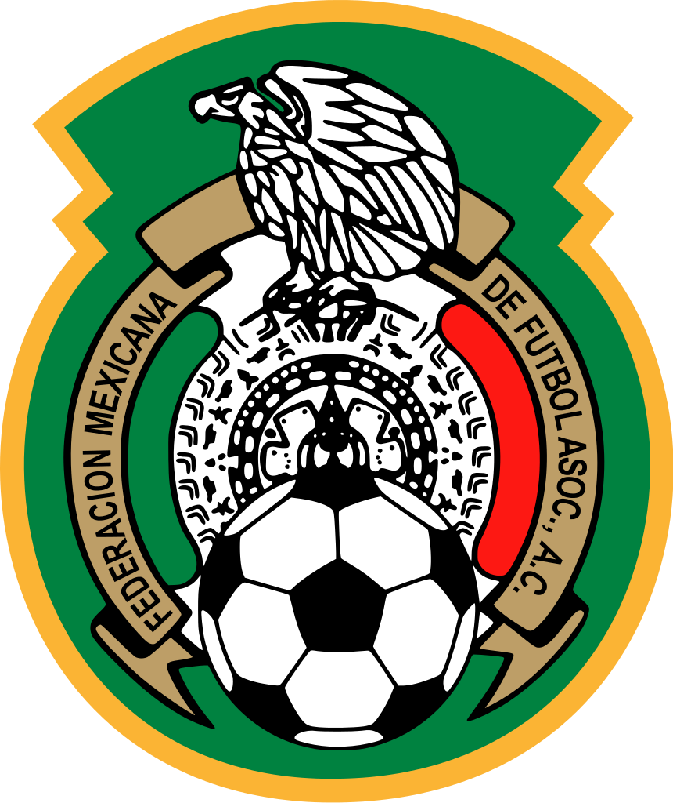

...........
The american football team was one of the original teams to compete in the world cup in 1930 and placed third which was very good for a team that was in it's first competition. They proposed an invitation to FIFA and were part of the 13 teams to compete. They have other forms of football and soccer isnt their best but with their original success and current form, the sport is being picked up by most of them.
They have competed in the last seven competitions struggling to go higher than the round of 16. In 2002 with an exception of 1930 produced their best performance ever reaching the quarter-finals before being knocked out by the dominant german team.
The little brothers of the united states, canada is not a country whose interest in football isn't huge at all. They have only achieved qualification in one world cup in their football history which was in the 1986 world cup hosted by Mexico.
They went there with their heads held high just to be disappointed with three straight defeats. It got people wondering how they even managed qualification. They were a laughing stock. They have failed to qualify since then.
Mexico who although have hosted 2 world cups and have qualified for 15 out of 20 FIFA world cups have only reached the quater-finals twice which is a sad tale because of thier incredible consistency.
Their two times of reaching the world cup quarter-finals have been events that they hosted themselves. They are the most dominant side of football on their continent but that is a little consolement for 15 out of 20 qualification.